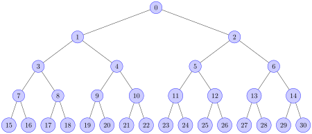

heapq — Algoritmo de fila heap¶
Código-fonte: Lib/heapq.py
Este módulo fornece uma implementação do algoritmo de fila heap, também conhecido como algoritmo de fila de prioridade.
Min-heaps are binary trees for which every parent node has a value less than or equal to any of its children. We refer to this condition as the heap invariant.
For min-heaps, this implementation uses lists for which
heap[k] <= heap[2*k+1] and heap[k] <= heap[2*k+2] for all k for which
the compared elements exist. Elements are counted from zero. The interesting
property of a min-heap is that its smallest element is always the root,
heap[0].
Max-heaps satisfy the reverse invariant: every parent node has a value
greater than any of its children. These are implemented as lists for which
maxheap[2*k+1] <= maxheap[k] and maxheap[2*k+2] <= maxheap[k] for all
k for which the compared elements exist.
The root, maxheap[0], contains the largest element;
heap.sort(reverse=True) maintains the max-heap invariant.
The heapq API differs from textbook heap algorithms in two aspects: (a)
We use zero-based indexing. This makes the relationship between the index for
a node and the indexes for its children slightly less obvious, but is more
suitable since Python uses zero-based indexing. (b) Textbooks often focus on
max-heaps, due to their suitability for in-place sorting. Our implementation
favors min-heaps as they better correspond to Python lists.
These two aspects make it possible to view the heap as a regular Python list
without surprises: heap[0] is the smallest item, and heap.sort()
maintains the heap invariant!
Like list.sort(), this implementation uses only the < operator
for comparisons, for both min-heaps and max-heaps.
In the API below, and in this documentation, the unqualified term heap
generally refers to a min-heap.
The API for max-heaps is named using a _max suffix.
To create a heap, use a list initialized as [], or transform an existing list
into a min-heap or max-heap using the heapify() or heapify_max()
functions, respectively.
The following functions are provided for min-heaps:
- heapq.heapify(x)¶
Transform list x into a min-heap, in-place, in linear time.
- heapq.heappush(heap, item)¶
Push the value item onto the heap, maintaining the min-heap invariant.
- heapq.heappop(heap)¶
Pop and return the smallest item from the heap, maintaining the min-heap invariant. If the heap is empty,
IndexErroris raised. To access the smallest item without popping it, useheap[0].
- heapq.heappushpop(heap, item)¶
Coloca item no heap, depois retira e retorna o menor item do heap. A ação combinada é executada com mais eficiência do que
heappush()seguida por uma chamada separada paraheappop().
- heapq.heapreplace(heap, item)¶
Abre e retorna o menor item da heap e também coloca o novo item. O tamanho do heap não muda. Se o heap estiver vazio, a exceção
IndexErrorserá levantada.Esta operação de uma etapa é mais eficiente que
heappop()seguida porheappush()e pode ser mais apropriada ao usar um heap de tamanho fixo. A combinação de retirar/colocar sempre retorna um elemento do heap e o substitui por item.O valor retornado pode ser maior que o item adicionado. Se isso não for desejado, considere usar
heappushpop(). Sua combinação de retirar/colocar retorna o menor dos dois valores, deixando o valor maior no heap.
For max-heaps, the following functions are provided:
- heapq.heapify_max(x)¶
Transform list x into a max-heap, in-place, in linear time.
Adicionado na versão 3.14.
- heapq.heappush_max(heap, item)¶
Push the value item onto the max-heap heap, maintaining the max-heap invariant.
Adicionado na versão 3.14.
- heapq.heappop_max(heap)¶
Pop and return the largest item from the max-heap heap, maintaining the max-heap invariant. If the max-heap is empty,
IndexErroris raised. To access the largest item without popping it, usemaxheap[0].Adicionado na versão 3.14.
- heapq.heappushpop_max(heap, item)¶
Push item on the max-heap heap, then pop and return the largest item from heap. The combined action runs more efficiently than
heappush_max()followed by a separate call toheappop_max().Adicionado na versão 3.14.
- heapq.heapreplace_max(heap, item)¶
Pop and return the largest item from the max-heap heap and also push the new item. The max-heap size doesn’t change. If the max-heap is empty,
IndexErroris raised.The value returned may be smaller than the item added. Refer to the analogous function
heapreplace()for detailed usage notes.Adicionado na versão 3.14.
O módulo também oferece três funções de propósito geral baseadas em heaps.
- heapq.merge(*iterables, key=None, reverse=False)¶
Mescla diversas entradas classificadas em uma única saída classificada (por exemplo, mescla entradas com registro de data e hora de vários arquivos de log). Retorna um iterador sobre os valores classificados.
Semelhante a
sorted(itertools.chain(*iterables))mas retorna um iterável, não puxa os dados para a memória todos de uma vez e presume que cada um dos fluxos de entrada já está classificado (do menor para o maior).Possui dois argumentos opcionais que devem ser especificados como argumentos nomeados.
key especifica uma função chave de um argumento que é usado para extrair uma chave de comparação de cada elemento de entrada. O valor padrão é
None(compare os elementos diretamente).reverse é um valor booleano. Se definido como
True, então os elementos de entrada serão mesclados como se cada comparação fosse invertida. Para obter um comportamento semelhante asorted(itertools.chain(*iterables), reverse=True), todos os iteráveis devem ser classificados do maior para o menor.Alterado na versão 3.5: Adicionados os parâmetros opcionais key e reverse.
- heapq.nlargest(n, iterable, key=None)¶
Retorna uma lista com os n maiores elementos do conjunto de dados definido por iterable. key, se fornecido, especifica uma função de um argumento que é usado para extrair uma chave de comparação de cada elemento em iterable (por exemplo,
key=str.lower). Equivalente a:sorted(iterable, key=key, reverse=True)[:n].
- heapq.nsmallest(n, iterable, key=None)¶
Retorna uma lista com os n menores elementos do conjunto de dados definido por iterable. key, se fornecido, especifica uma função de um argumento que é usado para extrair uma chave de comparação de cada elemento em iterable (por exemplo,
key=str.lower). Equivalente a:sorted(iterable, key=key)[:n].
As duas últimas funções têm melhor desempenho para valores menores de n. Para valores maiores, é mais eficiente usar a função sorted(). Além disso, quando n==1, é mais eficiente usar as funções embutidas min() e max(). Se for necessário o uso repetido dessas funções, considere transformar o iterável em um heap real.
Exemplos básicos¶
Um heapsort pode ser implementado colocando todos os valores em um heap e, em seguida, retirando os menores valores, um de cada vez:
>>> def heapsort(iterable):
... h = []
... for value in iterable:
... heappush(h, value)
... return [heappop(h) for i in range(len(h))]
...
>>> heapsort([1, 3, 5, 7, 9, 2, 4, 6, 8, 0])
[0, 1, 2, 3, 4, 5, 6, 7, 8, 9]
Isto é semelhante a sorted(iterable), mas diferente de sorted(), esta implementação não é estável.
Os elementos de heap podem ser tuplas. Isto é útil para atribuir valores de comparação (como prioridades de tarefas) juntamente com o registro principal que está sendo rastreado:
>>> h = []
>>> heappush(h, (5, 'write code'))
>>> heappush(h, (7, 'release product'))
>>> heappush(h, (1, 'write spec'))
>>> heappush(h, (3, 'create tests'))
>>> heappop(h)
(1, 'write spec')
Other Applications¶
Medians are a measure of central tendency for a set of numbers. In distributions skewed by outliers, the median provides a more stable estimate than an average (arithmetic mean). A running median is an online algorithm that updates continuously as new data arrives.
A running median can be efficiently implemented by balancing two heaps, a max-heap for values at or below the midpoint and a min-heap for values above the midpoint. When the two heaps have the same size, the new median is the average of the tops of the two heaps; otherwise, the median is at the top of the larger heap:
def running_median(iterable):
"Yields the cumulative median of values seen so far."
lo = [] # max-heap
hi = [] # min-heap (same size as or one smaller than lo)
for x in iterable:
if len(lo) == len(hi):
heappush_max(lo, heappushpop(hi, x))
yield lo[0]
else:
heappush(hi, heappushpop_max(lo, x))
yield (lo[0] + hi[0]) / 2
Por exemplo:
>>> list(running_median([5.0, 9.0, 4.0, 12.0, 8.0, 9.0]))
[5.0, 7.0, 5.0, 7.0, 8.0, 8.5]
Notas de implementação da fila de prioridade¶
Uma fila de prioridade é de uso comum para um heap e apresenta vários desafios de implementação:
Estabilidade de classificação: como fazer com que duas tarefas com prioridades iguais sejam retornadas na ordem em que foram adicionadas originalmente?
A comparação de tuplas quebra para pares (prioridade, tarefa) se as prioridades forem iguais e as tarefas não tiverem uma ordem de comparação padrão.
Se a prioridade de uma tarefa mudar, como movê-la para uma nova posição no heap?
Ou se uma tarefa pendente precisar ser excluída, como encontrá-la e removê-la da fila?
Uma solução para os dois primeiros desafios é armazenar as entradas como uma lista de 3 elementos, incluindo a prioridade, uma contagem de entradas e a tarefa. A contagem de entradas serve de desempate para que duas tarefas com a mesma prioridade sejam retornadas na ordem em que foram adicionadas. E como não há duas contagens de entradas iguais, a comparação de tuplas nunca tentará comparar diretamente duas tarefas.
Outra solução para o problema de tarefas não comparáveis é criar uma classe wrapper que ignore o item da tarefa e compare apenas o campo de prioridade:
from dataclasses import dataclass, field
from typing import Any
@dataclass(order=True)
class PrioritizedItem:
priority: int
item: Any=field(compare=False)
Os desafios restantes giram em torno de encontrar uma tarefa pendente e fazer alterações em sua prioridade ou removê-la totalmente. Encontrar uma tarefa pode ser feito com um dicionário apontando para uma entrada na fila.
Remover a entrada ou alterar sua prioridade é mais difícil porque quebraria os invariantes da estrutura de heap. Assim, uma possível solução é marcar a entrada como removida e adicionar uma nova entrada com a prioridade revisada:
pq = [] # lista de entradas organizadas em uma heap
entry_finder = {} # mapeamentos de tarefas para entradas
REMOVED = '<removed-task>' # espaço reservado para uma tarefa removida
counter = itertools.count() # contagem de sequência única
def add_task(task, priority=0):
'Adiciona uma nova tarefa ou atualiza a prioridade de uma tarefa existente'
if task in entry_finder:
remove_task(task)
count = next(counter)
entry = [priority, count, task]
entry_finder[task] = entry
heappush(pq, entry)
def remove_task(task):
'Marca uma tarefa existente com REMOVED (removida). Levanta KeyError se não encontrada.'
entry = entry_finder.pop(task)
entry[-1] = REMOVED
def pop_task():
'Remove e retorna a tarefa de mais baixa prioridade. Levanta KeyError se vazio.'
while pq:
priority, count, task = heappop(pq)
if task is not REMOVED:
del entry_finder[task]
return task
raise KeyError('pop from an empty priority queue')
Teoria¶
Heaps são arrays para os quais a[k] <= a[2*k+1] e a[k] <= a[2*k+2] para todos k, contando elementos de 0. Para fins de comparação, os elementos inexistentes são considerados infinitos. A propriedade interessante de um heap é que a[0] é sempre seu menor elemento.
The strange invariant above is meant to be an efficient memory representation
for a tournament. The numbers below are k, not a[k]:

Na árvore acima, cada célula k está no topo de 2*k+1 e 2*k+2. Num torneio binário normal que vemos nos desportos, cada célula é a vencedora das duas células que está no topo, e podemos rastrear o vencedor na árvore para ver todos os adversários que teve. Contudo, em muitas aplicações informáticas de tais torneios, não precisamos de traçar a história de um vencedor. Para sermos mais eficientes em termos de memória, quando um vencedor é promovido, tentamos substituí-lo por algo de nível inferior, e a regra passa a ser que uma célula e as duas células que ela cobre contêm três itens diferentes, mas a célula de cima “ganha” sobre as duas células superiores.
Se esse invariante de heap estiver protegido o tempo todo, o índice 0 é claramente o vencedor geral. A maneira algorítmica mais simples de removê-lo e encontrar o “próximo” vencedor é mover algum perdedor (digamos a célula 30 no diagrama acima) para a posição 0 e, em seguida, filtrar esse novo 0 pela árvore, trocando valores, até que o invariante é restabelecido. Isto é claramente logarítmico do número total de itens na árvore. Ao iterar todos os itens, você obtém uma classificação O(n log n).
Um recurso interessante desse tipo é que você pode inserir novos itens com eficiência enquanto a classificação está em andamento, desde que os itens inseridos não sejam “melhores” que o último 0º elemento extraído. Isto é especialmente útil em contextos de simulação, onde a árvore contém todos os eventos recebidos e a condição “vitória” significa o menor tempo programado. Quando um evento agenda outros eventos para execução, eles são agendados para o futuro, para que possam entrar facilmente no heap. Portanto, um heap é uma boa estrutura para implementar escalonadores (foi isso que usei no meu sequenciador MIDI :-).
Várias estruturas para implementação de escalonadores foram extensivamente estudadas, e os heaps são bons para isso, pois são razoavelmente rápidos, a velocidade é quase constante e o pior caso não é muito diferente do caso médio. No entanto, existem outras representações que são globalmente mais eficientes, embora os piores casos possam ser terríveis.
Heaps também são muito úteis em classificações de discos grandes. Provavelmente todos vocês sabem que uma classificação grande implica a produção de “execuções” (que são sequências pré-classificadas, cujo tamanho geralmente está relacionado à quantidade de memória da CPU), seguidas de passagens de fusão para essas execuções, cuja fusão geralmente é muito inteligente. organizado [1]. É muito importante que a classificação inicial produza as execuções mais longas possíveis. Os torneios são uma boa maneira de conseguir isso. Se, usando toda a memória disponível para realizar um torneio, você substituir e filtrar itens que se encaixem na corrida atual, você produzirá corridas que têm o dobro do tamanho da memória para entradas aleatórias e muito melhores para entradas ordenadas de maneira imprecisa.
Além disso, se você gerar o 0º item no disco e obter uma entrada que pode não caber no torneio atual (porque o valor “ganha” sobre o último valor de saída), ele não poderá caber no heap, então o tamanho do heap diminui. A memória liberada poderia ser reutilizada de maneira inteligente e imediata para a construção progressiva de um segundo heap, que cresce exatamente na mesma proporção que o primeiro heap está derretendo. Quando o primeiro heap desaparece completamente, você troca os heaps e inicia uma nova execução. Inteligente e bastante eficaz!
Em uma palavra, heaps são estruturas de memória úteis para conhecer. Eu os uso em alguns aplicativos e acho bom manter um módulo “heap” por perto. :-)
Notas de rodapé